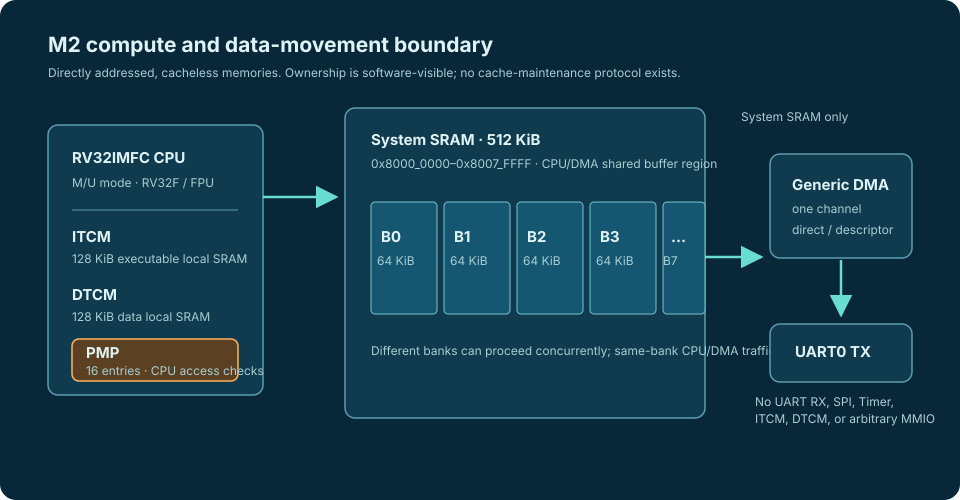
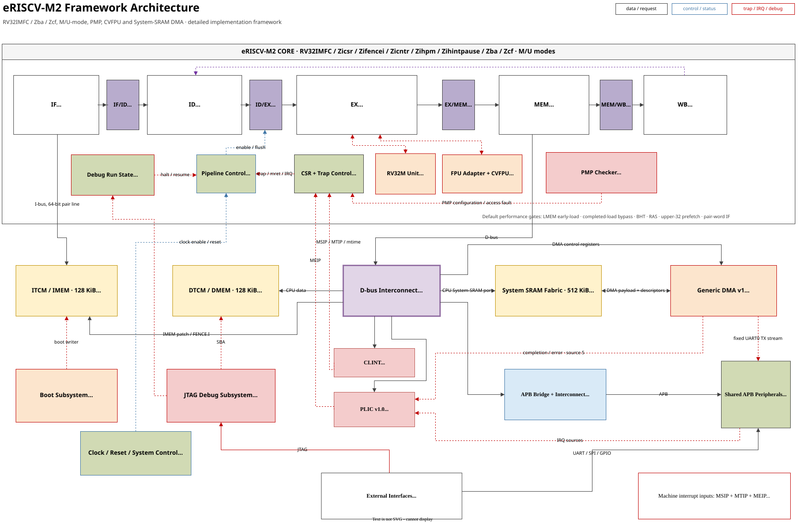

Floating-point firmware
RV32F supplies binary32 operations with f0–f31, FCSR, precise FP flags, and explicit mstatus.FS state management.
PRELIMINARY PRODUCT DATASHEET / M2
eRISCV-M2 adds single-precision floating point, larger local memories, banked shared System SRAM, and a firewall-restricted generic DMA channel to the protected M1 baseline.

SECTION 01
This preliminary datasheet defines the binary32 compute and bounded shared-data-movement configuration. Package, electrical, maximum-frequency, ordering, and availability data are not announced.
| CPU configuration | RV32IMFC with Zba, Zcf, Zicsr, Zifencei, Zicntr, Zihpm, and Zihintpause; ilp32f ABI. |
|---|---|
| Privilege and protection | Machine and user modes with a 16-entry PMP that checks CPU accesses. |
| Local memory | 128 KiB executable ITCM and 128 KiB non-executable DTCM; directly addressed and cacheless. |
| Shared memory | 512 KiB non-executable System SRAM in eight independently arbitrated 64 KiB banks. |
| Generic DMA | One channel with direct and linked-descriptor modes. Payload accesses are limited to System SRAM, with a fixed direct UART0-TX byte-stream endpoint. |
| Common services | CLINT, 32-source PLIC, Debug 1.0 Minimal JTAG DTM/DMI, and HPM3–HPM6. |

SECTION 02
Use M2 when an application needs binary32 work or controlled shared data movement. M2 retains M1’s M/U and 16-entry PMP model, then adds a dedicated FP register file, FCSR state, eight-bank System SRAM, and one generic DMA channel with direct and linked-descriptor modes.
RV32F supplies binary32 operations with f0–f31, FCSR, precise FP flags, and explicit mstatus.FS state management.
System SRAM is a directly addressed, non-executable 512 KiB region split into eight independently arbitrated 64 KiB banks.
One channel copies System SRAM directly or through 32-byte linked descriptors. A fixed direct System-SRAM-to-UART0-TX byte stream is the only documented peripheral endpoint.
SECTION 03
M2 combines protected RV32F compute with bounded shared-buffer movement. CPU PMP and generic-DMA firewall rules are separate controls: PMP checks CPU accesses only, while DMA is restricted by its own System-SRAM endpoint policy.
| Hart and integer execution | One in-order, little-endian RV32IMFC hart with RV32M, RV32C, Zba, and Zcf. Compressed instructions are supported; IALIGN is 16 bits. |
|---|---|
| Floating point | RV32F binary32 with f0–f31, mstatus.FS, FCSR, fflags, and frm. RV32D, Zfa, and vector extensions are not implemented. |
| PMP and privilege | Machine and user modes with 16 PMP entries checking CPU instruction fetches, loads, and stores. PMP does not automatically constrain DMA accesses. |
| CPU-local storage | 128 KiB executable ITCM and 128 KiB non-executable DTCM. CPU-local TCM traffic is outside System-SRAM/DMA arbitration. |
| Shared storage | 512 KiB non-executable System SRAM formed from eight independently arbitrated 64 KiB 1RW banks. Different-bank requests can proceed concurrently; same-bank requests serialize fairly. |
| Counters | cycle, time, instret, and four programmable 64-bit HPM counters (mhpmcounter3–mhpmcounter6). |
| Not implemented | RV32D, Zfa, vectors, atomics, S-mode, an MMU, caches, cacheable aliases, and general peripheral DMA endpoints. |
SECTION 04
M2 combines a compact APB set with one bounded DMA data-movement interface. Peripheral register behavior and pin-level integration remain owned by the shared architecture and board documentation.
| Block | M2 scope | Interrupt path |
|---|---|---|
| UART0 | 8N1 transmit/receive with parameterized FIFOs; polling and interrupt-driven BSP use. DMA supports the fixed System-SRAM-to-TX byte stream only. | PLIC source 1 for the aggregated UART condition. |
| GPIO0 | Output, input, and direction registers. Pin count, pads, and muxing are board-specific and not announced. | No dedicated PLIC source; source 14 is reserved for a future GPIO interrupt function. |
| TIMER0 | APB counter/compare timer. | PLIC source 2 on enabled expiry. |
| SPI0 | Byte-oriented controller with four active-low slave-select outputs. | PLIC source 3 on enabled transfer completion. |
| WDT0 | Watchdog control and pre-timeout path. | PLIC source 4 on enabled pre-timeout. |
| Generic DMA | One System-SRAM direct or linked-descriptor channel. UART RX, SPI, Timer, arbitrary MMIO, ITCM, and DTCM are not DMA endpoints. | PLIC source 5 for completion/error; descriptor completion can set the same source. |
| Platform services | CLINT, PLIC, clock/reset control, and JTAG debug. | CLINT supplies local MSIP/MTIP; PLIC supplies MEIP. |
SECTION 05
Use the populated M2 windows; unimplemented addresses return a bus error. This is a product-level quick reference; the complete sparse allocation and PLIC register contract remain in the shared Architecture chapter.
| Region | Address range | M2 use |
|---|---|---|
| ITCM | 0x1000_0000–0x1001_FFFF | 128 KiB executable local SRAM. |
| DTCM | 0x1100_0000–0x1101_FFFF | 128 KiB non-executable local SRAM for data and stack. |
| CLINT | 0x0200_0000–0x0200_BFFF | MSIP, mtime, and mtimecmp. |
| PLIC | 0x0C00_0000–0x0C20_0FFF | One M-mode context and 32 global sources. |
| APB peripheral space | 0x4000_0000–0x40FF_FFFF | UART0, GPIO0, TIMER0, SPI0, WDT0, and clock/reset control in fixed 64 KiB slots. |
| DMA control | 0x5000_0000–0x5000_FFFF | One generic DMA channel control window. |
| System SRAM | 0x8000_0000–0x8007_FFFF | 512 KiB CPU/DMA shared non-executable buffer region. |
| CPU interrupt | Cause | Source |
|---|---|---|
| MSIP | 3 | CLINT software interrupt. |
| MTIP | 7 | CLINT timer interrupt. |
| MEIP | 11 | PLIC output. Sources 1–5 are UART0, TIMER0, SPI0, WDT0, and generic DMA; sources 6–16 are reserved device slots and sources 17–32 are reserved board/external expansion slots. |
SECTION 06
Reset chooses a local-image or loader-controlled start; JTAG provides the external debug boundary.
rst_n is the active-low SoC reset. On release, the core starts at boot_addr_i only when fetch is enabled. SRAM contents are not reset; reset clears control and response state.
Bypass starts the existing ITCM image. JTAG/DMI and UART boot loaders write ITCM then release fetch. The SPI-flash boot mode is reserved and has no implemented boot path.
One Debug 1.0 Minimal hart is accessed through JTAG DTM/DMI. M2 retains halt/resume, abstract 32-bit GPR access, debug CSRs, single step, mcontrol/icount triggers, and 32-bit DTCM system-bus access; FPR abstract access is not implemented.
The privileged boot/debug ITCM writer is provisioning logic outside the PMP contract. DMA is instead constrained by its System-SRAM firewall; M2 makes no secure-boot or debug-lockout claim.
No package-level clock limit, reset timing, pad electrical behavior, pinout, or board boot qualification is published. A board integration requires separate definition and qualification of those conditions.
SECTION 07
The software contract fixes RV32F use, System-SRAM ownership, and the current RTOS FP boundary.
| Area | M2 support boundary |
|---|---|
| Compiler contract | -march=rv32imfc_zicsr_zifencei_zicntr_zihpm_zihintpause_zba_zcf and -mabi=ilp32f. |
| Freestanding BSP | Product-local startup, linker script, trap handling, FPU/FCSR and PMP helpers, DMA driver, MMIO headers, UART, GPIO, CLINT, PLIC, timer, SPI, and watchdog programming surfaces. |
| Image and buffer model | Startup places text/rodata in ITCM and data, BSS, and stack in DTCM. DMA payloads and descriptors reside in System SRAM with explicit CPU/DMA ownership. |
| RTOS collateral | FreeRTOS M-mode, FreeRTOS U-mode/PMP smoke, and Zephyr M-mode ports are development/simulation profiles. The current FreeRTOS profiles retain the integer ABI until FP registers and FCSR are saved and restored per task. |
| Functional workloads | DMA direct/descriptor/UART-TX tests and 128-point binary32 FFT are CI collateral; the 1024-point FFT is an extended stress test. They establish functional evidence, not a guaranteed performance specification. |
| Other workloads | CoreMark, Embench-IoT selections, Dhrystone, and microbenchmarks are engineering collateral; they do not establish a guaranteed performance specification. |
SECTION 08
Use explicit ownership, not cache maintenance.
128 KiB ITCM and 128 KiB DTCM are CPU-local. System SRAM is the CPU/DMA shared buffer region; it is separate from local-memory arbitration.
Different-bank requests can proceed concurrently. Same-bank CPU and generic-DMA requests serialize through fair per-bank arbitration.
DMA payload access is restricted to System SRAM, except for the fixed UART0 TX stream. It does not grant arbitrary MMIO, ITCM, DTCM, UART RX, SPI, or Timer access.
Applications enable FP state before use. Current FreeRTOS profiles retain the integer ABI until task-context preservation of FP registers and FCSR is defined.
SECTION 09
M2 does not provide RV32D, Zfa, vectors, atomics, S-mode, an MMU, caches, cacheable aliases, DMA cache maintenance, UART RX/SPI/Timer generic-DMA endpoints, Ethernet/Wi-Fi integration, flash/XIP, or production boot/image format definition.
FP FFT and DMA software examples are engineering validation collateral, not a published throughput, latency, board-performance, package, electrical, or availability guarantee.
SECTION 10
The Architecture chapter owns the ISA/ABI declaration, address map, and PLIC allocation. See Software for toolchain, FPU, System SRAM, and DMA use, Verification for evidence boundaries, and FPGA evaluation for implementation context.